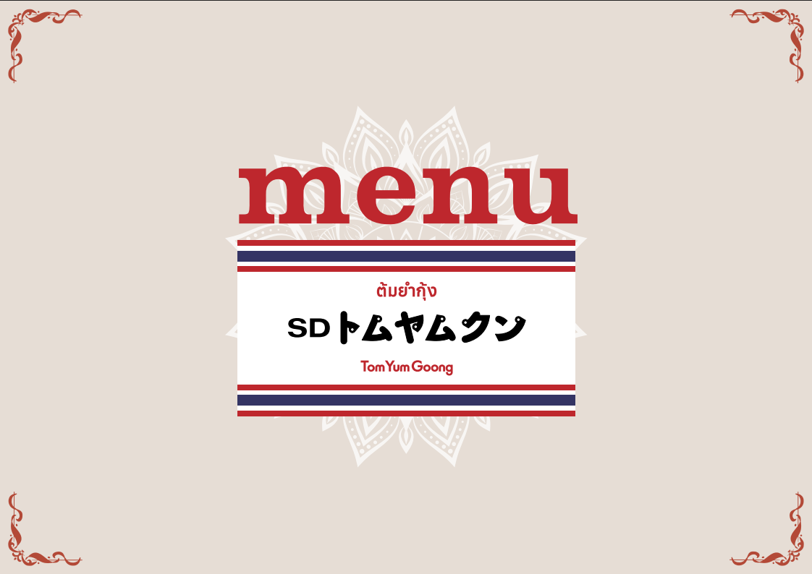

SD トムヤムクン メニューAR ・ 運用ガイド
いま何がどう動いていて、料理の追加や写真の差し替えをどう回すのが負担が少ないか。判断のための整理です。
結論から。今は料理写真そのものを認識しています。だから写真を撮り直すと反応しなくなる。将来はQRで識別する方式にすると、写真が変わっても壊れず、店舗は「QRを貼るだけ」で回せます。
専用アプリは不要。スマホのブラウザだけで動きます。お客さまの体験はシンプルです。
お客さま
仕組み
「写真が変わったら反応しない」の“変わったら”を正確に。すべての変更で壊れるわけではありません。
頻繁に写真を差し替える運用だと、この作り直しが毎回発生します。ここが管理のネックです。
「お客さまのラクさ」はどれもほぼ同じ（かざすだけ）。差が出るのは店舗の管理のしやすさと写真変更への強さです。
| 方式 | お客さま | 店舗の管理 | 写真変更に強い |
|---|---|---|---|
| A. 今の写真認識 | かざすだけ | 写真を変える度に作り直し | 弱い |
| B. QR認識 おすすめ |
QRを読んでかざす | QRを貼るだけ／追加も登録のみ | 強い |
| C. 管理サイト | かざすだけ | ブラウザで登録・自己完結 | 中〜強 |
C（管理サイト）は理想ですが開発の手間が大きめ。まずは B（QR認識）が費用対効果で最良です。
料理ごとにQRを置き、QRで「どの料理か」を確定します。写真認識に頼らないので、料理写真を変えても識別は壊れません。
お客さま
店舗・管理者
「今の方式」と「QR方式にした場合」の手順比較。工程が減るのが分かります。
写真をよく変えるなら → 迷わず QR方式。作り直しの手間が消えます。
当面メニューが固定なら → 今の写真認識のままで十分。変更時だけ対応。
店舗側で自己管理したいなら → 将来的に管理サイト（C）へ。まずQR方式で土台を作るのが近道。
今すぐ着手しなくてOK。方向はQR方式で共有済みなので、必要になったタイミングで一式（QR発行〜マーカー化〜料理ルーティング）を用意します。